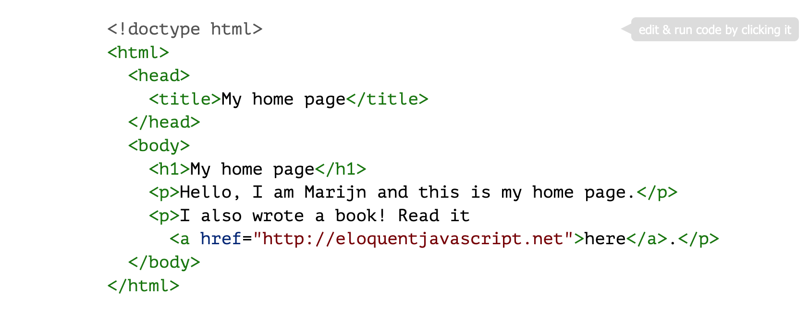
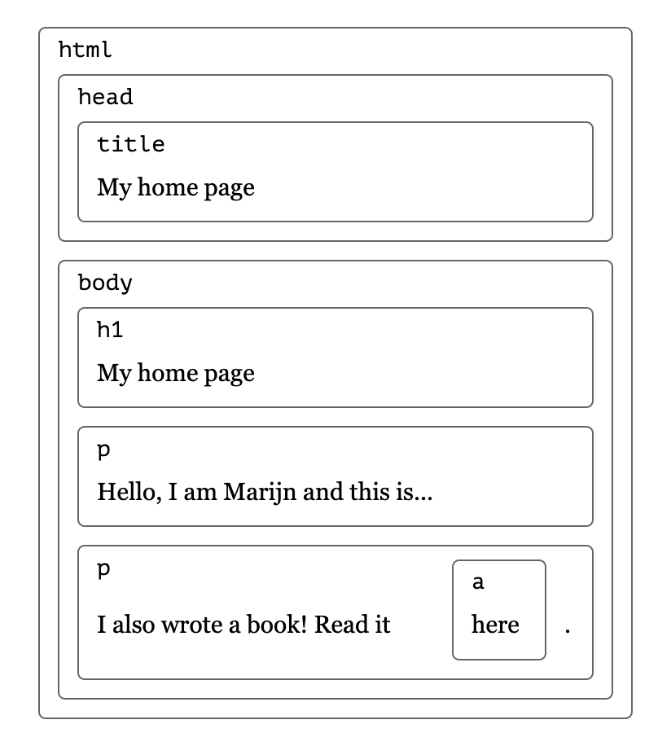
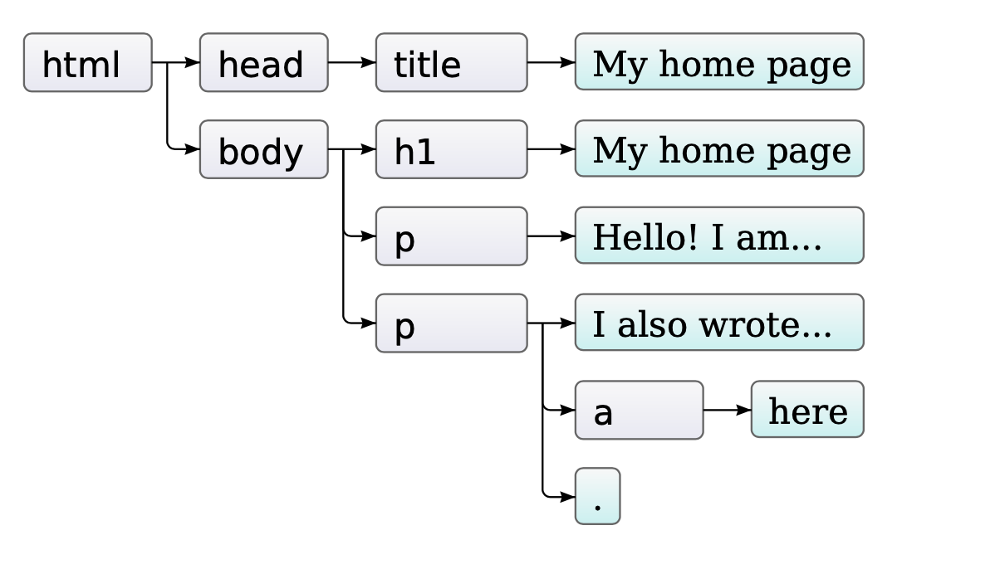
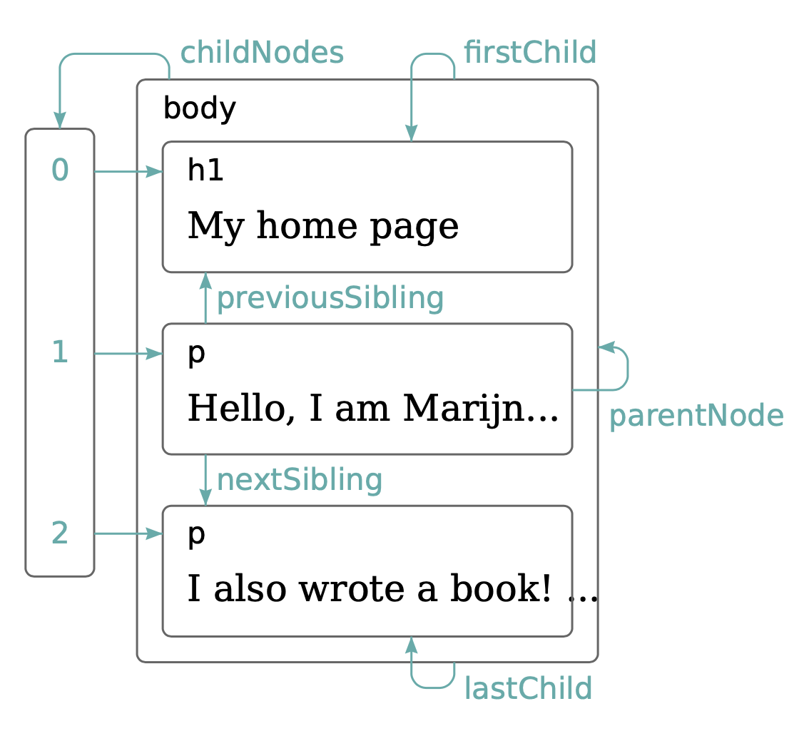

Ao abrirmos um documento HTML num browser, o primeiro evento que ocorre é uma análise sintática sobre a linguagem HTML (um parsing) para avaliar como será sua renderização. Se o resultado do parser for OK, o documento HTML é transformado num tipo abstrato de dado (TAD) interno para ser manupilado. Este TAD é o que chamamos de DOM - Document Object Model.
Seja o arquivo HTML abaixo:
Podemos imaginar que esse documento como uma série de "caixas" contendo os elementos HTML em seu interior. Esses elementos são os parágrafos, os headers, as imagens, entre outros. Esse documento acima poderia ser visto como estas "caixas" na imagem a seguir:
Cada "caixa" corresponde a um elemento HTML, indiretamente a uma tag.
DOM é o TAD que representa toda essa estrutura. Nesta estrutura cada
elemento é representado por um objeto DOM.
Internamente esses elementos HTML são representados numa estrutura arbórea em que cada elemento é um nó desta árvore. Essa árvore tem um elemento principal que é o elemento raíz, o document, e este as suas folhas, ou seja, os demais elementos no documento.
Veja uma representação do documento DOM já mencionado anteriormente na figura a seguir:
Para "caminhar" nesta estrutura arbórea, o DOM proporciona algumas facilitades, tais como conhecer os elementos HTML pelos seus pais e filhos, parentNode e childNodes.
Veja a ficura abaixo:
JavaScript também oferece algumas conveniências e facilidades, tais como
acessar diretamente o firstChild e o lastChild,
que apontam para o primeiro e último filho, respectivamente.
Na ausência de um deles, o valor null é retornado.
Além destes, podemos ter acesso aos irmãos previousSibling
e nextSibling, ou seja, apontadores para nós adjacentes.
Note também que existe uma estrutura de arranjo que aponta diretamente para
esses elementos da árvore.
No código abaixo vemos três modos de "caminhar" pela estrutura DOM do HTML. Note que o terceiro modo usa o conceito de árvore.
Veja o código fonte aqui.
Para o perfeito entendimento do funcionamento do software aconselha-se a executá-lo com a janela da console aberta.
O código em execução encontra-se aqui
Agora iremos escrever um script que substitua todas as imagens no documento pelo texto mantido em seus atributos alt. Isso envolve não apenas remover as imagens, mas adicionar um novo nó de texto para substituí-las. Os nós de texto são criados com o documento. Vamos usar um método chamado createTextNode.
Vejamos o código em execução aqui